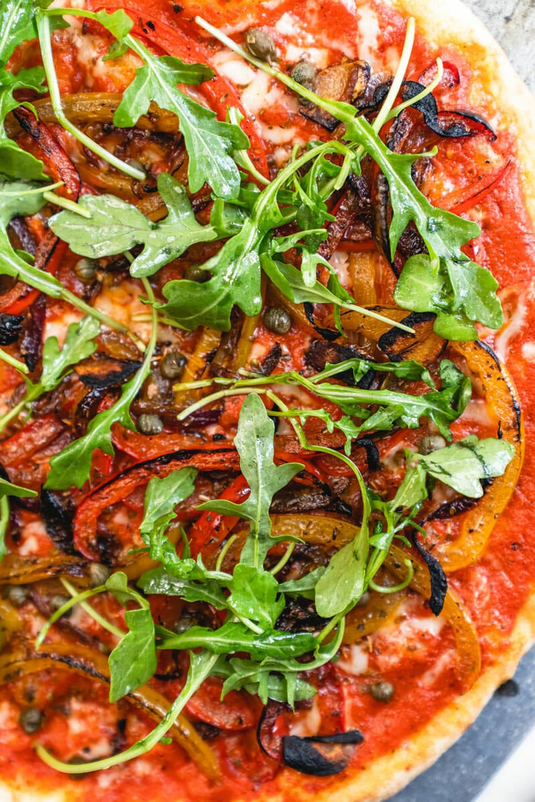

Healthy Pizza Recipe

Description
This pizza uses our easy thin crust pizza dough. It’s made with simple ingredients (flour, olive oil, water) and because it’s thin, it has significantly less calories than a fluffy crust.
Red sauce brings big flavor without big calories. This one is our easy pizza sauce, a fan-favorite recipe that takes only 5 minutes and tastes like Italy. (Really.)
This healthy pizza has only ¼ cup grated Parmesan cheese. It’s just enough to bring in a savory flavor, but there’s so much flavor in the veggies and sauce you don’t need to load on cheese.
This pizza is topped with peppers that are loaded with vitamin C, and leafy green nutrient-dense baby arugula.
Ingredients
- 1 ball Easy Thin Crust Dough
- ½ cup Easy Pizza Sauce
- 1/2 yellow bell pepper
- 1/2 red bell pepper
- 1/4 medium red onion
- 1 garlic clove
- 1 tablespoon olive oil
- ½ teaspoon dried oregano, plus more for garnish
- ½ tablespoon capers, drained
- ¼ cup grated Parmesan cheese
- ½ cup baby arugula
- Kosher salt
- Olive oil
- Semolina flour or cornmeal, for dusting the pizza peel
Steps
- Make the pizza dough: Follow the Easy Thin Crust Pizza Dough recipe to prepare the dough. (This takes about 15 minutes to make and 45 minutes to rest.)
- Place a pizza stone in the oven and preheat to 500°F. OR preheat your pizza oven
- Make the pizza sauce: Make the Easy Pizza Sauce.
- Thinly slice the peppers. Thinly slice the red onion. Thinly slice the garlic. In a skillet, add 1 tablespoon olive oil and ¼ teaspoon kosher salt. Saute the vegetables, stirring often, for about 7 to 10 minutes, until browned and very soft. Stir in the oregano and remove from the heat.
- When the oven is ready, dust a pizza peel with cornmeal or semolina flour. (If you don’t have a pizza peel, you can use a rimless baking sheet or the back of a rimmed baking sheet. But a pizza peel is well worth the investment!) Stretch the dough into a circle; see How to Stretch Pizza Dough for instructions. Then gently place the dough onto the pizza peel.
- Spread the pizza sauce over the dough using the back of a spoon to create a thin layer. Sprinkle with the vegetables, drained capers, and Parmesan cheese.
- Use the pizza peel to carefully transfer the pizza onto the preheated pizza stone. Bake the pizza until the cheese and crust are nicely browned, about 5 to 7 minutes in the oven (or 1 minute in a pizza oven).
- While the pizza is baking, mix the baby arugula with a drizzle of olive oil and a pinch of kosher salt. When the pizza is done, top with the arugula. Slice into pieces and serve immediately.